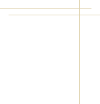
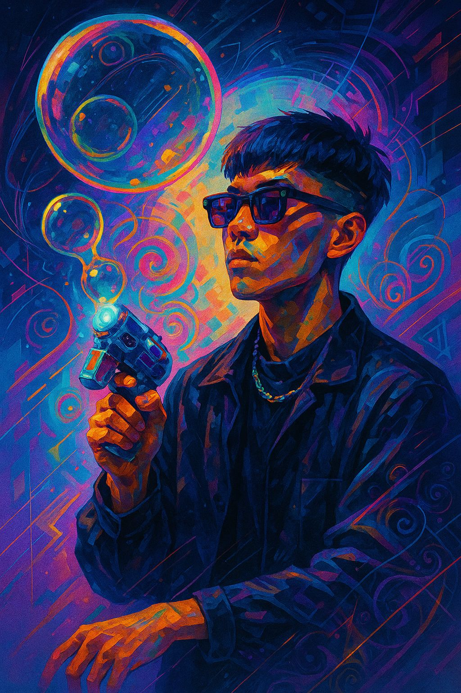
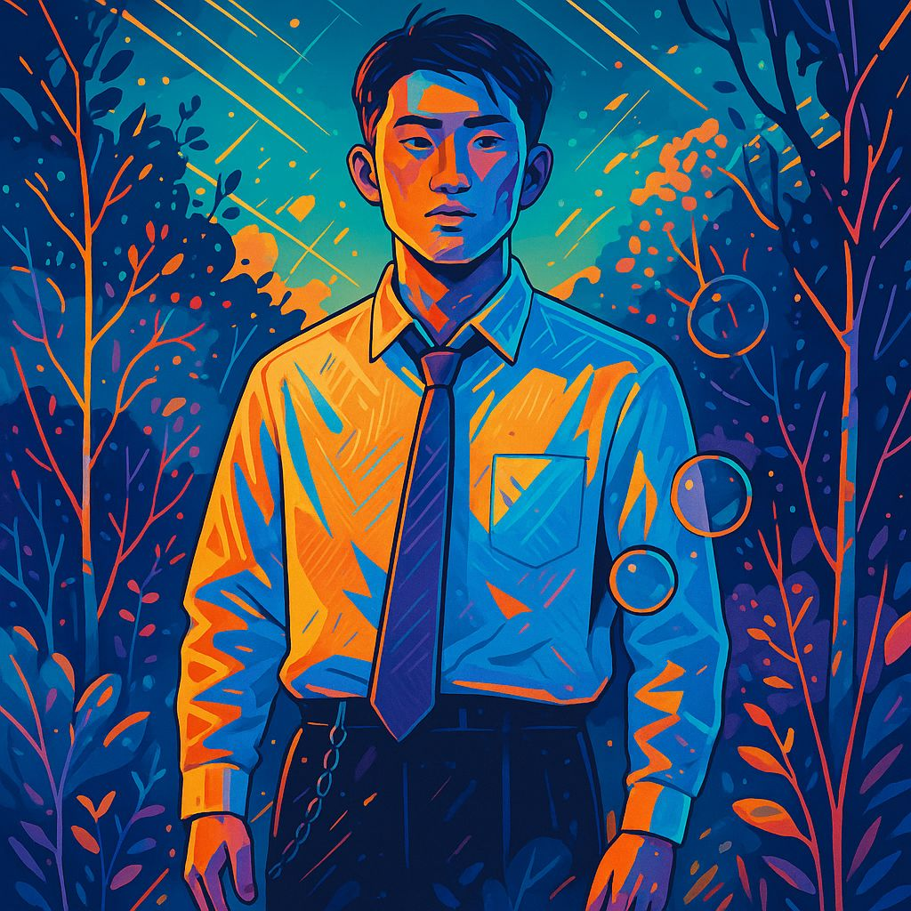

NinetyNight
取自Ninetynine，由一群來自台灣的年輕設計師組成，
「 Ninetynight 」乘載了每一位來自九夜青年的夢想，我們也因此而相聚
「 9 」這個數字有需多含意也象徵著結束和新的開始對我們而言意義也為之重大
「 9 」和中文的「 久 」同音而取自為「 9 9 」是因為我們認為對設計來說
真正的完美 不是100%而是99%而剩下的1%是我們對長久未來的憧憬與渴望。
「 Ninetynight 」乘載了每一位來自九夜青年的夢想，我們也因此而相聚
「 9 」這個數字有需多含意也象徵著結束和新的開始對我們而言意義也為之重大
「 9 」和中文的「 久 」同音而取自為「 9 9 」是因為我們認為對設計來說
真正的完美 不是100%而是99%而剩下的1%是我們對長久未來的憧憬與渴望。

我們涉足於多媒體設計領域，成立至今，我們已與許多品牌、內容創作者、藝術單位合作
透過我們的設計與整合，完成了超過數十筆品牌合作案、近百件跨媒介作品製作並且多次登上國際創意平台與媒體曝光
每一份成果，背後都來自數十夜的思考與打磨，我們並不討厭快創作，但我們更忠對於創作的節奏與作品的品質。
透過我們的設計與整合，完成了超過數十筆品牌合作案、近百件跨媒介作品製作並且多次登上國際創意平台與媒體曝光
每一份成果，背後都來自數十夜的思考與打磨，我們並不討厭快創作，但我們更忠對於創作的節奏與作品的品質。
Who's IN
主要職務是UI/UX
設計師但同時又會影片剪輯和3D建模，時常被當成萬能工具人
「呂士軒說過，滿分留給你的夢想，99留給你的偶像。」
99分是我的信念，98分是我的理想，不完美才稱得上完美。」
設計師但同時又會影片剪輯和3D建模，時常被當成萬能工具人
「呂士軒說過，滿分留給你的夢想，99留給你的偶像。」
99分是我的信念，98分是我的理想，不完美才稱得上完美。」

FOUNDER
9 9

Co-Founder
JASON
技術長負責技術架構、網站互動邏輯與視覺整合系統開發。
擅長將抽象想法轉化為具象畫面，風格細膩，對色彩與空間節奏特別敏感。
「程式不只是邏輯，它也是節奏」
擅長將抽象想法轉化為具象畫面，風格細膩，對色彩與空間節奏特別敏感。
「程式不只是邏輯，它也是節奏」
Co-Founder
SELINA
主視覺設計師
擅長將抽象想法轉化為具象畫面，風格細膩，
對色彩與空間節奏特別敏感。
「設計的聲音，是在靜下來之後才會聽見的」
擅長將抽象想法轉化為具象畫面，風格細膩，
對色彩與空間節奏特別敏感。
「設計的聲音，是在靜下來之後才會聽見的」
這裡乘載了每個人的夢想，我們希望每一樣成品都能讓客戶滿意，
給出最專業的建議並且與客戶建立良好的信任。
雖然夢想的道路上非常顛頗，但走著走著也走到這了。
給出最專業的建議並且與客戶建立良好的信任。
雖然夢想的道路上非常顛頗，但走著走著也走到這了。